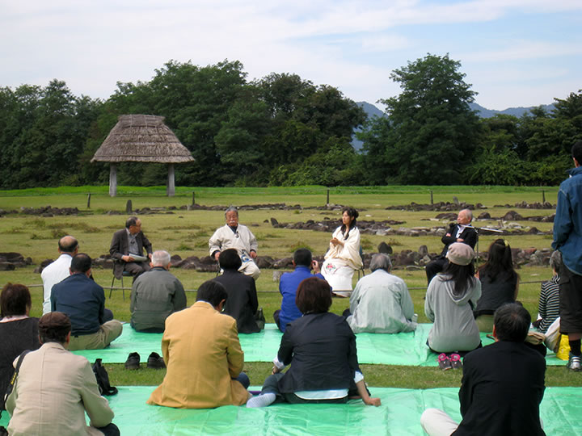
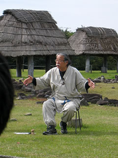
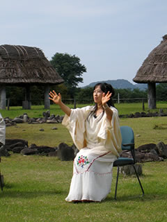
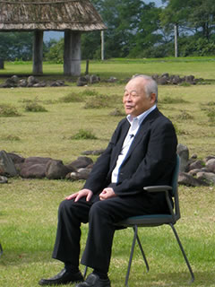
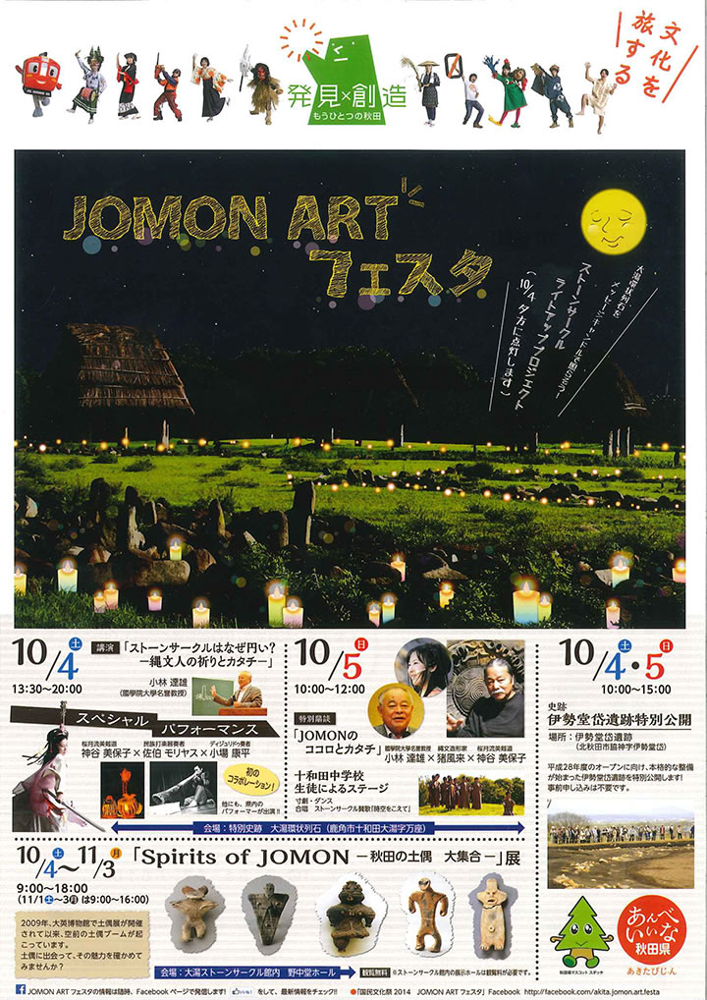
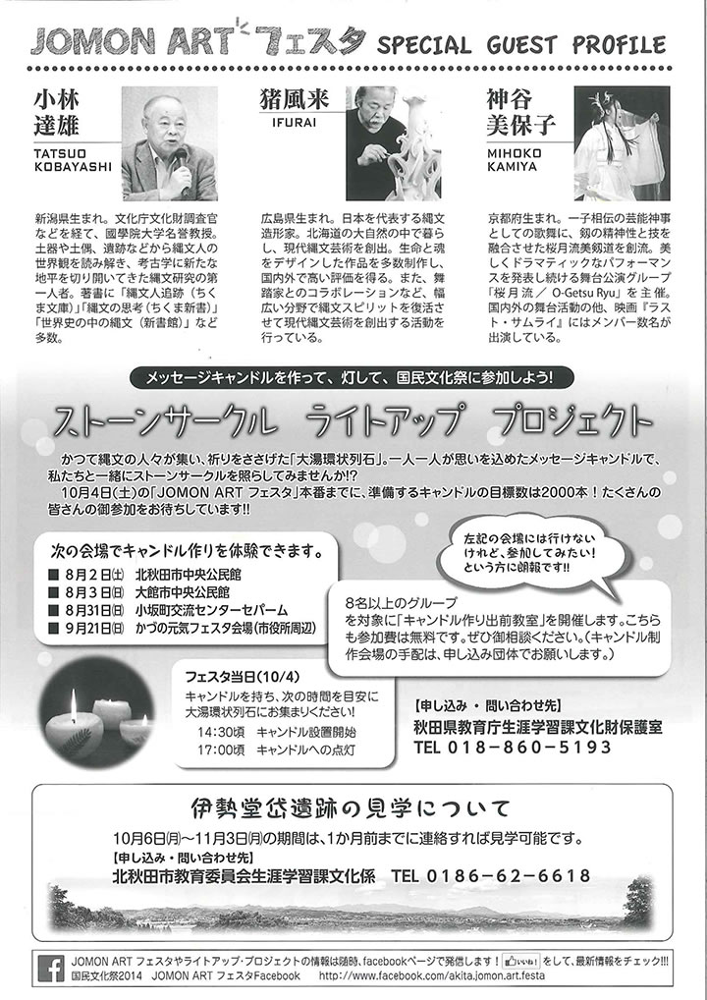

|  | ||
|  |  |  |
「秋田の縄文を世界遺産に」との主旨で、秋田県の大湯環状列石を祭場として縄文アートフェスタが開かれま
した。
直径52ｍ、7200個の石英閃緑ヒン岩を運んで石座にストーンサークルを創造した縄文人たち。
夏至の日没方向を指し示す日時計状組石などに見る縄文人の見事な造形力。
この遺跡の中を場として「ＪＯＭＯＮのココロとカタチ」と題した特別鼎談。
小林達雄(国学院大学名誉教授)、猪風来(縄文造形家)、神谷美保子(桜月流美剱道)の三者による、いまを生きる
現代人が縄文スピリットを学ぶ文化磁場として遺跡が生かされてゆく方向性を示す鼎談となり、各地から集まっ
た多くの人が耳を傾けました。
=∴=∵=∴=∵=∴=∵=∴=∵=∴=∵=∴=∵=∴=∵=∴=∵=∴=∵=∴=∵=∴=∵=∴=∵=∴=∵=∴=
特別鼎談
『ＪＯＭＯＮのココロとカタチ』
■ゲスト： 小林達雄(国学院大学名誉教授) × 猪風来(縄文造形家) × 神谷美保子(桜月流美剱道)
■日 時： １０月５日（日）午前１０：００～１２：００
■会 場： 大湯環状列石（大湯ストーンサークル館）
|  |
|  |
| 【第29回国民文化祭・あきた2014『ＪＯＭＯＮ ＡＲＴフェスタ』チラシ】 →PDF版を開く |
ＪＯＭＯＮ ＡＲＴフェスタ
■日 程：
（１）平成26年10月４日（土）～５日（日）
◆イベント・・・・・・大湯環状列石（大湯ストーンサークル館）
◆特別公開・・・・・・伊勢堂岱遺跡
（２）平成26年10月４日（土）～11月３日（月・祝）
◆土偶展・・・・・・・大湯環状列石（大湯ストーンサークル館）
■会 場： 大湯環状列石（鹿角市）、伊勢堂岱遺跡（北秋田市）
■担 当： 秋田県教育庁生涯学習課文化財保護室